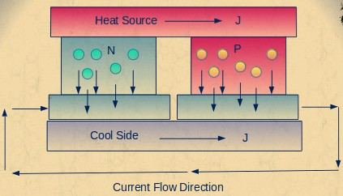
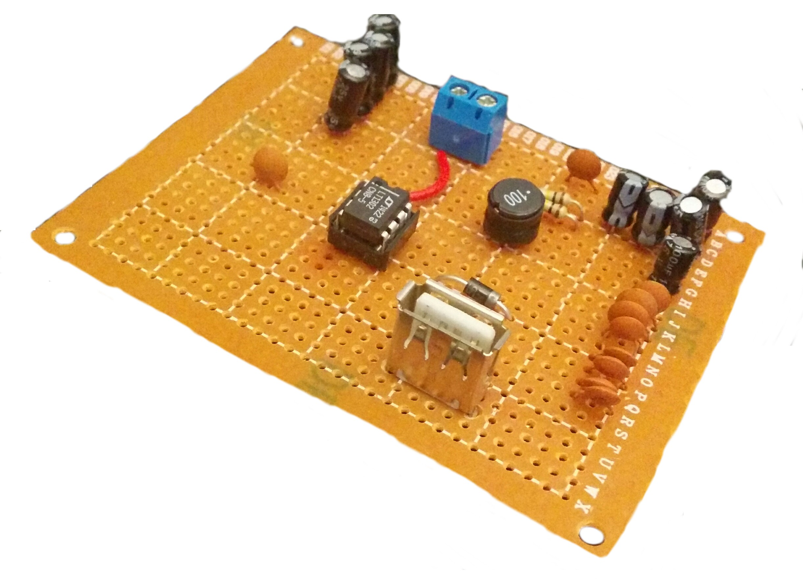
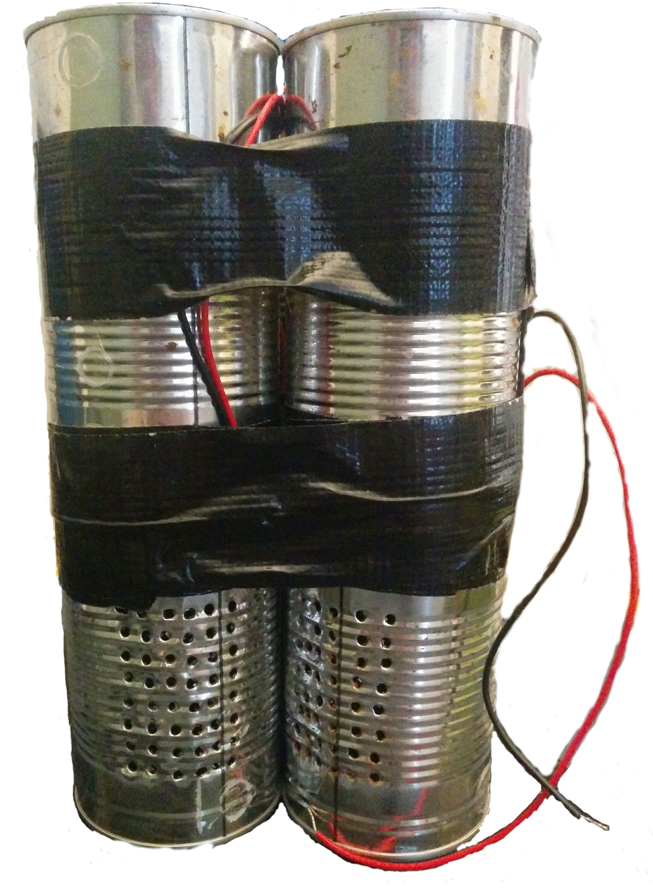
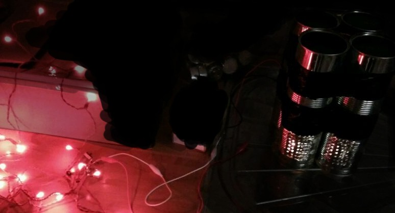

This page was originally hosted on Hackaday.io, but has was moved here on 2018-03-24.
How to build a Thermoelectric generator cheaply for survival camps. Designed to be very efficient. (They are also known as Seebeck Generators). The TEG I am building will be able to power/charge a 5V (at 600mA) device through a standard USB "Type A" port.
Thermoelectric generators (TEG) work in an extremely clever way. TEGs work using peltier devices which are essentially two ceramic plates with semiconductors in-between. These are normally used in fridges and kettles for camping; when a current is placed across the peltier, it can cause it to rapidly heat to boiling in just a few minutes, or simply by reversing the polarity it can quickly drop below freezing point.
By reverse engineering these small devices; rather than placing the current through them we give the device a temperature difference on each ceramic plate it will produce D.C. voltage (Emf-Electromotive force [battery voltage]). The higher the temperature difference the higher the voltage generated.
This works because rather than giving the peltiers electrical energy to create heat (or negative heat), we are providing the heat to get electricity from the device.
It is known as the Seebeck effect (temperature difference to electricity), the opposite of the Peltier effect (electricity to heat/temperature difference).
This Schematic is a possible way to convert the output from the generator/s to the required Current and Voltage. The 3V battery can be replaced with the TEG. (Image: Adafruit - MintyBoost V2). For ease, the MintyBoost V3 can be used instead and can be bought as a kit through Adafruit, the battery connectors can then be attached the the correct leads on the TEG.
The design of each of the modules of the circuit. (I have changed the design slightly, as to what is seen above, so that it has holes on one side of the bottom can, see below). Each can of the module were attached securely using duct tape (sellotape in the prototype - above).
This device was a proof of concept, and performed brilliantly and fully worked, with only four modules and four tea light candles, it was able to charge a mobile phone to full charge. (I recommend not testing this on your own phone as it may break it if the wiring was not correct or a component was damaged).
At some point in the future I will try to make a more efficient version of this. Feel free to use this design or modify it as you wish.
This is an image of the TEG powering some LED lights.